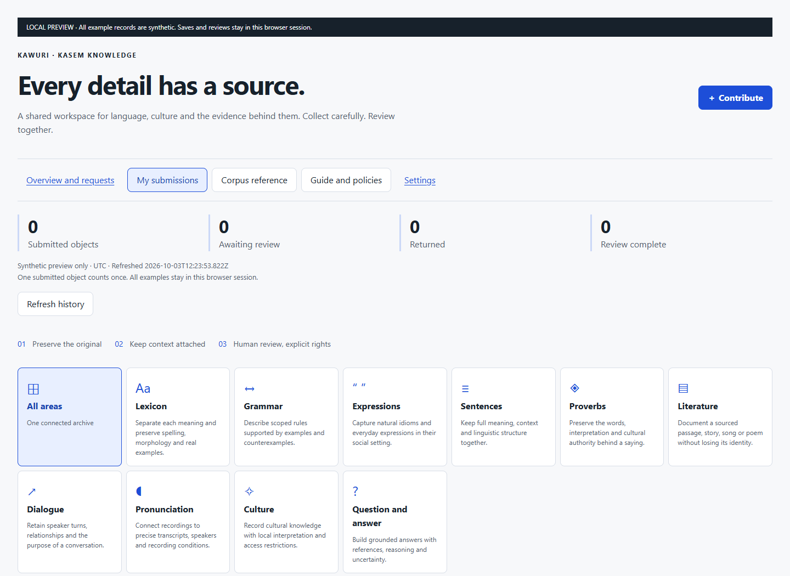
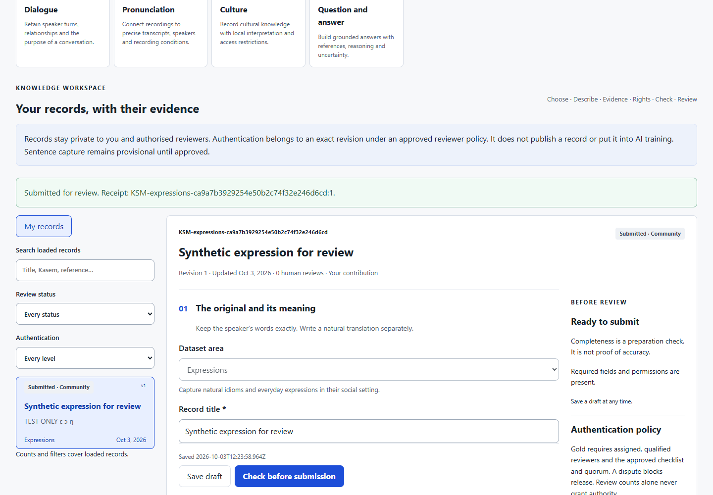

Kasem knowledge needs more than a text box. A word, an expression, a story and a recording each need their own context, source and permissions. The new Kawuri corpus workspace brings those details together in TribeStudio, with a history contributors can follow.
Availability: The workspace was deployed and its live route verified on 3 October 2026. Sign in at TribeStudio’s corpus workspace. Qualified Gold authentication and downstream corpus publication remain disabled until the required human policies and reviewer assignments are approved. Positive contribution and review flows have been tested in emulators; a representative community pilot is still required.

Contributors can choose lexicon, grammar, expressions, sentences, proverbs, literature, dialogue, pronunciation, culture or question-and-answer examples. Each area has relevant fields. Speaker turns, story segments, examples and senses can be kept in order, with their original text, translations and context.
Expressions stay expressions and sentences stay sentences. The workspace does not split them into dictionary words. French translations and unresolved grammatical analysis are not universal submission requirements. Unknown, not applicable, not yet translated and no direct equivalent have separate meanings in the form.
Open Contribute to the corpus in the contributor workspace, or visit /contributor/corpus and sign in. Choose a category, preserve the original material, identify its source, and record the rights state. Drafts save to your account with a confirmed timestamp. If a save fails, your text stays in the open editor so you can retry.
Check the complete record before submitting. A successful submission returns a receipt tied to its exact revision. Retrying that request does not create a second contribution. Later changes create a new revision, while earlier submitted text and decisions remain traceable.

The corpus overview counts submitted objects, work awaiting review, returned records and completed reviews. It labels the reporting period, timezone and last refresh. Revisions are separate from object counts. Existing assignment recognition history remains available; corpus contributions do not introduce a new payment or points programme.
Reviewers need current category and scope assignments backed by qualification evidence. They record a checklist and an explanation against the exact revision. Administrative access or two approval clicks alone no longer establish Gold authentication in this corpus. Cultural and language review can have separate scopes, and a dispute blocks release.
Public display, AI retrieval, training, evaluation and recording permissions are separate choices. Rights-holder and consent references stay in the review workspace; public attribution is captured separately. Unresolved or restricted rights block release. Original recordings are protected from replacement, and a recording contribution does not grant permission to replicate a voice.
A separate release step selects an eligible exact revision and destination. Reference readers, Kawuri and exports recheck eligibility. Withdrawing a record blocks future corpus use and records a revocation case. Previously downloaded exports or trained models require further follow-up; the workspace does not promise automatic removal from a trained model.
Sentence capture remains provisional and can be saved privately while its schema is settled. Reviewer qualifications, quorum, consent and retention rules, category contracts, publication destinations and evaluation targets need approval by the responsible community and product leads. No legacy approval is silently promoted to Gold, no bulk migration runs automatically, and this release launches no model-training job.